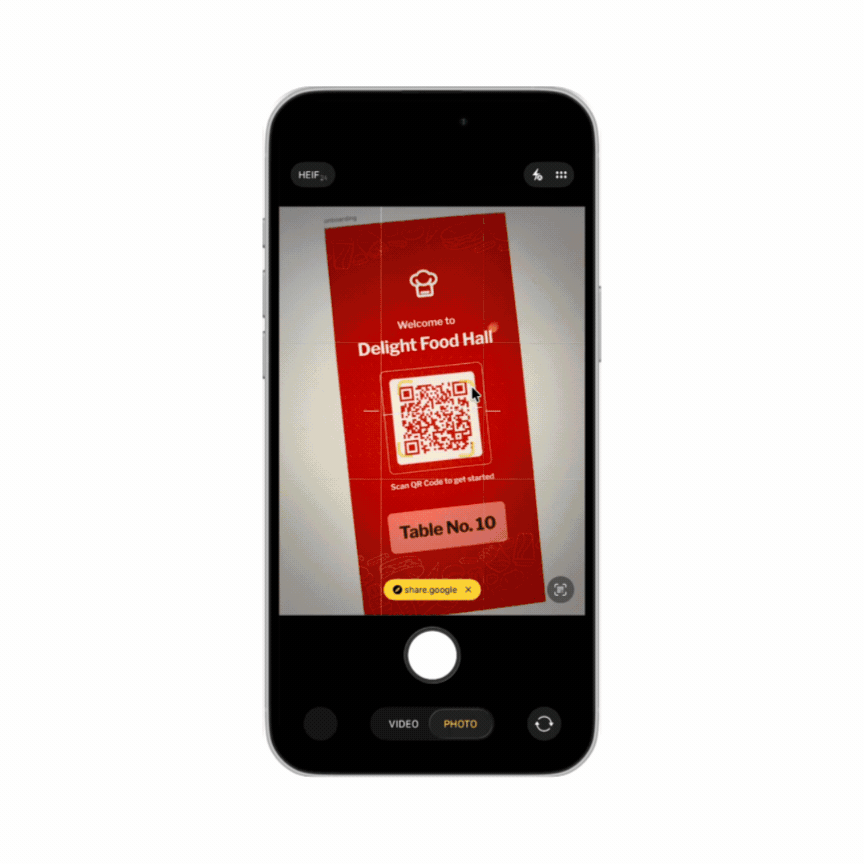
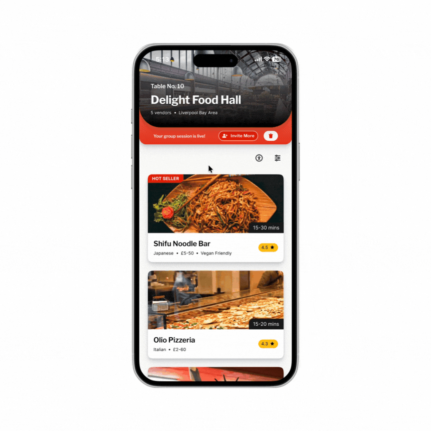
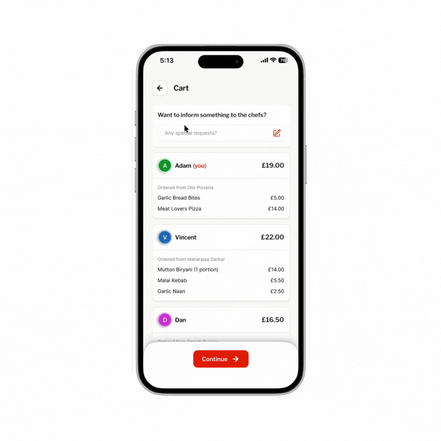
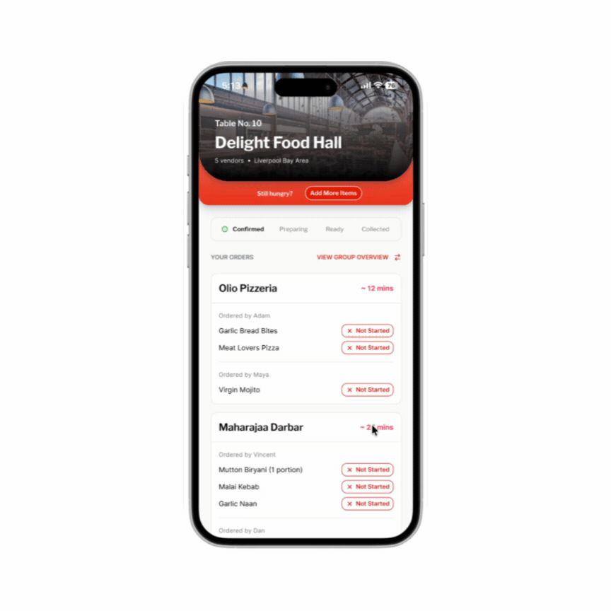

Culinarr
Culinarr (opens in new tab) is a prototype for group ordering at UK food halls. Scan a QR code, browse every vendor's menu in one place, and each person pays for exactly what they ordered. No app download, no account, no end-of-night bill chaos.
My role: prototyping (a 13-screen interactive prototype across 4 flows), plus secondary research, four interviews, a competitive audit of nine food halls, journey mapping, a five-participant usability test, and a WCAG colour-contrast check.

The problem
Anyone who's ordered food for a group at a food hall knows the drill: four separate queues, dishes arriving in waves twenty minutes apart, and a bill at the end that gets split evenly eight ways — even though two people didn't drink and one just had a salad.
I audited nine UK food halls to see what already existed. Four had QR ordering, and those covered one vendor or drinks only, never the whole hall. The other five were counter service with no QR at all. I couldn't find anything built for ordering across a whole hall as a group.
"A QR-triggered web app where one person opens a session, everyone joins on their own phone, browses across every vendor, and settles their own share. No app download, no account, no post-dinner payment chasing."
— The product I set out to designThe behavioural research was more consistent than I expected. Splitting a bill equally tends to inflate spending by around 37%, 78% of diners say they'd rather pay only for what they ordered, and people are 3.2× more likely to overpay than risk looking awkward about money in front of a group. Asking for a fairer split costs more, socially, than overpaying does.
Sources: Gneezy, Haruvy & Yafe (2004); Splitty (2025) survey; my own nine-hall audit.
Existing tools get close but don't get there. In my comparison, me&u only partly supports spontaneous group sessions and filters dietary needs per vendor, and Uber Eats assumes one restaurant and one host who pays for everyone.
My starting hypothesis: if everyone could browse, order and pay for their own items from their own phone, with no app and no account, both the coordination friction and the payment friction would drop.
Research
To get past my own assumptions, I combined behavioural-economics literature on group spending with a competitive audit of nine food halls and a read-through of reviews across TripAdvisor, Reddit, Google and Facebook. I also interviewed four people. Three findings shaped what followed.

Group dining behaviour. Sequential ordering sets an unspoken spending ceiling — whoever orders first anchors what feels acceptable for everyone after them.

The 9-hall audit. Every hall with QR ordering stopped at one vendor or drinks only. None covered the whole hall.

Payment psychology. 72% of people find talking about money at the table harder than religion or politics. Fairness is wanted — the social script for it just doesn't exist yet.
What it came down to: a fair way to split a bill rarely gets suggested out loud, so the product needed to make that conversation unnecessary.
Finding the real problem
Journey mapping, built from the research, is what reframed the project for me. I went in assuming payment was the painful part. The emotional low point was ordering: a host guessing what six people want over a WhatsApp thread, four have replied, two haven't, and everyone's getting hungrier.
I used two personas, built from that research and the four interviews: Sam, a host who just wants everyone fed without becoming the evening's logistics manager, and Zara, a student with dietary restrictions who'd rather quietly filter a menu than ask a server to double-check every dish.

"I just want everyone to have a good time without me spending the whole night being the logistics manager."

"I have dietary restrictions but I hate making a fuss — I just want to know what I can eat before I get to the counter."

The brief this produced: how might we help groups coordinate orders, pay fairly, and enjoy the meal — without an app, an account, or one designated payer?
That changed the order of work: coordination first, payment second. Two decisions follow from it.
Guests choose, the host submits. Anyone can join a session by QR, a 4-digit code, or a link shared on WhatsApp for people who arrive late, and add whatever they like. Everyone sees the shared cart as it grows, so nobody is guessing what the table has ordered. Only the host can send it, for three reasons. If anyone could submit, someone would send the order while others were still deciding, and the group would end up with several partial orders. The host is also the person the table already expects to coordinate, so the rule matches how groups behave. And one submit moment locks the order, so every share is final before anyone pays. The cost: the host holds the one lock on timing, so a distracted host can hold up the table.
Everyone pays for their own items by default. I compared four options: the host sets the split, a group vote, a hybrid of personal items plus shared plates, and itemised by default. A host-set split gives one person too much power and latecomers no say. A vote adds friction before anyone has seen the menu. The hybrid was too complex for the scope, which is what I gave up: shared plates aren't split among selected people. Itemised won because the app already knows who ordered what, so equal split becomes a toggle, not the assumption.

One card system for every vendor
The hardest visual problem was making a burger menu, a sushi menu and a cocktail menu feel like one coherent product, not a generic third-party aggregator. I used one card component everywhere. Variety comes from each vendor's photography and colour header, and the structure never changes. The trade-off is that vendors get less control over their own layout.

Create. One tap after scanning generates a 4-digit code, a QR and a link — whichever gets the group in fastest.

Browse. One menu across every vendor, with a cross-vendor dietary filter (text labels alongside icons) and a dyslexia-friendly font toggle.

Pay. Everyone defaults to their own items. A live "remaining table balance" shows what's settled. One failed payment is designed not to block anyone else's order, though I haven't tested that against a real failure.

Track. Each item moves through Received → Preparing → Ready, per vendor, and the group is notified when everything is ready. I didn't find per-vendor tracking in the apps and halls I reviewed.
I tried a neobrutalist direction early on — bold outlines, high contrast — and liked it for about a day. It made dietary tags harder to scan and, more importantly, read as trendy rather than trustworthy for something handling real payments. I dropped it for the calmer system above.
What Testing Changed
Five participants, in person, SUS afterwards. Average task completion was 84% against my 80% target, ranging from 60% to 100%. Everyone completed creating or joining a session and paying. Four of five completed browsing and ordering, and tracking an order. Setting dietary filters fell short at 60%, so that's the one I'll walk through.
"I spent 40 seconds looking for the filter before I asked. Once I found it I used it immediately — it's just not where I expected it."
— P3, during testingThe filter icon was being read as general settings, not dietary filtering. The fix wasn't a better icon — it was removing the need to guess at all.

An icon-only filter, easily mistaken for general settings. Two of five testers never found it unprompted.

Moved to a persistent top-bar position with the text label "Filter by diet" — not icon alone, and aligned with WCAG 1.4.1. I retested the change and confusion dropped by roughly 5%.
Testing also exposed a gap in the split. P3 asked what happens if one person wants to pay individually while the other three split the rest, which my original design didn't cover. I changed it so the split mode can be switched even after someone has paid, and the remaining amount adjusts automatically.
SUS came out at 79.5 ("Good") against a target of 75. With five participants I'd treat that as directional. The colour-contrast checks I ran all passed WCAG AA. The bigger limit is who was in the room: all five were university peers with high digital literacy. Older diners, people less comfortable with new interfaces, and anyone in a genuinely loud food hall weren't tested.

What I'd do next
This was my first time running a structured usability study start to finish: recruiting, writing tasks, scoring SUS, coding interview notes. Five participants felt small the whole way through, until the same patterns kept showing up independently across sessions. If I ran it again I'd recruit six to eight before treating a finding like the dietary-filter failure as more than a strong hint.
Two things I'd do next:
An in-situ pilot. Every test so far has happened in a quiet room with cooperative participants. A real food hall is loud, crowded, and nobody's full attention — that's the environment that will actually break things.
A bigger sample on scope. The "Buy a Feature" exercise that shaped scope had three participants. Joining a session scored 0/3 even though I'd marked it a Must Have, so I made the join flow much more minimal. With three people I can't tell whether that was signal or noise. Six to eight would make it defensible.
If you'd like to see the full flow, here's the working prototype (opens in new tab), or feel free to reach out directly — happy to walk through the trade-offs and the parts that didn't work.